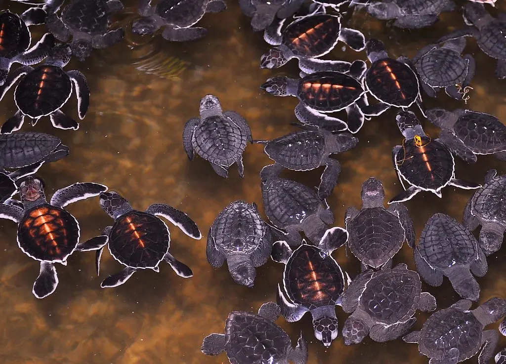
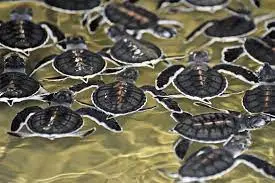

The Kosgoda Turtle Hatchery, located in the coastal town of Kosgoda in Sri Lanka, is a renowned conservation project dedicated to protecting and conserving sea turtles. The hatchery plays a vital role in preserving the population of several species of sea turtles, including the Olive Ridley, Green, Hawksbill, and Loggerhead turtles. The hatchery focuses on various aspects of turtle conservation, including nesting site protection, egg incubation, hatching, and releasing of hatchlings into the ocean. It serves as an educational center, allowing visitors to learn about the life cycle of sea turtles, the threats they face, and the importance of conservation efforts.


At the Kosgoda Turtle Hatchery, trained staff and volunteers collect sea turtle eggs from vulnerable nesting sites along the Sri Lankan coast. The eggs are then carefully incubated in specially designed hatcheries, protecting them from natural predators and human interference. Once the hatchlings emerge, they are kept in tanks until they are strong enough to be released into the sea. The hatchery also rehabilitates injured or sick turtles, providing them with medical care and a safe environment for recovery. By conducting research, raising awareness, and involving local communities, the Kosgoda Turtle Hatchery plays a significant role in preserving Sri Lanka's sea turtle populations and promoting their long-term survival.
Conservation Initiatives:
Nesting Site Protection:
Detailing the measures taken to identify and safeguard nesting sites from disturbances, including monitoring and patrolling to prevent poaching and predation.
Egg Incubation and Hatchery Management:
Explaining the incubation process, temperature control, and other factors that influence successful hatching. Discussing how the hatchery ensures optimal conditions for hatchling survival.
Hatchling Release Programs:
Describing the methods and frequency of hatchling releases into the ocean, emphasizing the significance of providing a safe environment during this critical stage.
Rehabilitation and Release of Injured Turtles:
Highlighting the hatchery's efforts in rescuing and rehabilitating injured or sick turtles, providing veterinary care, and ultimately releasing them back into the wild.
Education and Community Engagement:
Visitor Education:
Discussing the educational tours and presentations offered by the hatchery to visitors, providing information about sea turtles, their life cycles, and conservation challenges.
Local Community Involvement:
Highlighting the hatchery's efforts to collaborate with the local community, including training programs, employment opportunities, and initiatives to reduce human impacts on turtle habitats.
Awareness Campaigns:
Detailing the hatchery's outreach initiatives, such as workshops, seminars, and school programs, aimed at educating the public about the importance of sea turtle conservation and inspiring behavioral change
Sustainable Tourism Practices:
Exploring the hatchery's efforts to promote responsible tourism and minimize the environmental impact of visitor activities, while ensuring a positive experience for tourists interested in turtle conservation.